On the following day having stood off during the night the captain-major again
On the following day having stood off during the night the captain-major again
approached the land but the Western Ghats were wrapped in clouds, and it
approached the land but the Western Ghats were wrapped in clouds, and it
rained heavily, so that the pilot failed to identify the locality. The day after,
rained heavily, so that the pilot failed to identify the locality. The day after,
however, the 20th of May, having passed Monte Formosa; he recognised the
however, the 20th of May, having passed Monte Formosa; he recognised the
lofty mountains above Calicut, and in the evening of that day the little fleet
lofty mountains above Calicut, and in the evening of that day the little fleet
was riding at anchor about five miles off Capocate, or Capua, a small town
was riding at anchor about five miles off Capocate, or Capua, a small town
only seven miles to the north of the much-desired city, which was pointed out
only seven miles to the north of the much-desired city, which was pointed out
to the expectant Portuguese (P.48). Soon afterwards Vasco-da-Gama took up a
to the expectant Portuguese (P.48). Soon afterwards Vasco-da-Gama took up a
position right front of that city; but on May 27th a pilot of the Zamorin guided
position right front of that city; but on May 27th a pilot of the Zamorin guided
him to an anchorage off pandarani, thirteen miles to the north, on the ground of
him to an anchorage off pandarani, thirteen miles to the north, on the ground of
its greater safety, and at that anchorage the Portuguese remained no less than
its greater safety, and at that anchorage the Portuguese remained no less than
88 days, until August 23rd, when Vasco-da-Gama once more took up a position
88 days, until August 23rd, when Vasco-da-Gama once more took up a position
four leagues to the leeward of calicut. From that time to the day of his final
four leagues to the leeward of calicut. From that time to the day of his final
departure, in the afternoon of August 30th he hovered about that city, standing
departure, in the afternoon of August 30th he hovered about that city, standing
off and on, as the state of the weather or the exigencies of his relation with the
off and on, as the state of the weather or the exigencies of his relation with the
Zamorin required.
Zamorin required.
The above passage is an excerpt from a very old and valuable book “A
Journal of the First Voyage of Vasco-da-Gama,” published by the Hakluyt
Society, which collects and publishes records related to marine expeditions
and voyages. This voyage of Vasco-da-Gama Gama gave the Europeans a
new sea route to Malabar Coast and with this the entire Kerala in general,
and the Malabar Coast in particular, underwent many changes. The arrival of
Europeans through this beautiful and natural resource rich coast re-wrote the
history of India.
India has a coastline of about 7517 km including the coasts of Lakshadweep
and the Andaman and Nicobar Islands. Let's delve into this geographically
and historically significant coastal area.
Along the Coasts
8
Page 67
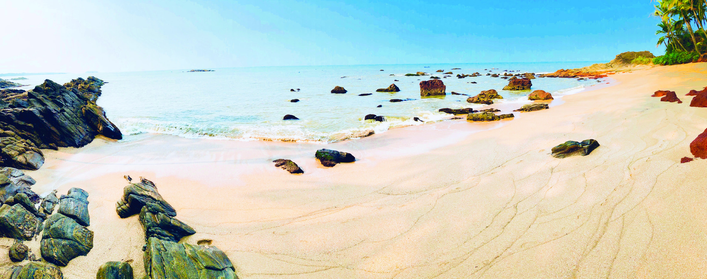
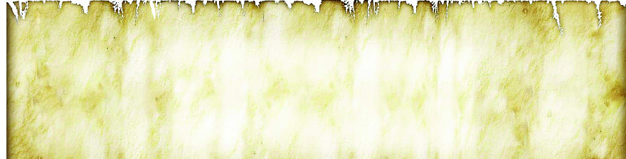
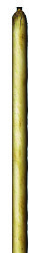
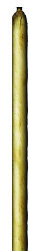
Page 68


164
Part II
Social Science II
Fig 8.1
Arabian Sea
Arabian Sea
Western Coastal Plain
Western Coastal Plain
Lakshadweep
Lakshadweep
Bay of Bengal
Bay of Bengal
Eastern
Eastern
Andaman and
Andaman and
Nicobar Islands
Nicobar Islands
Peninsular Plateau
Peninsular Plateau
Coastal Plain
Coastal Plain
Western Coastal Plain
Eastern Coastal Plain
Peninsular Plateau
LEGEND
The coastal plain, one of the physiographic units of India, is
densely populated due to the abundant factors suitable for
settlement. Write down these factors.
Plain land
Favourable climate
Availability of water
On the basis of location and physiographic characteristics,
the coastal plains of India can be divided into two.
Observe the Map (8.1). Identify and list their location.
The Western coastal plain
Depict the coastal plain in the outline map of India and include
it in 'My own Atlas'.
India Coastal Plains
India Coastal Plains
Page 69


165
Along the Coasts
Standard IX
Let's examine the characteristics
of Indian coastal plains.
Western Coastal Plain
Observe the Map (Fig. 8.1).
Did you understand that
the Western coastal plain is
a narrow strip of land lying
between the peninsular plateau
and Arabian sea. This coastal
plain stretching from Kachchh
in Gujarat to Kanyakumari
for about 1840 km, having width between 10 and 15 kms. It is
a submerged coast.
River deposits are less along the Western coast – find out the
reasons.
Observe Map 8.2. Identify the three divisions of Western coastal
Plain and depict on the outline map of India. Add the same to
My Own Atlas.
Another characteristic feature of the Western coastal plain is
the backwaters found along the coasts, which are also called
Kayals.
The Western coastal plain can be divided in to three:
Gujarat Coast
Konkan Coast
Malabar Cost
In coastal regions the coastal land rises
and the sea level falls due to some tectonic
activities like uplifment. As a result emerged
coasts are formed.
When tectonic activities like subsidence
take place, the coastal land subsides and
the sea level rises. As a result, submerged
coast is formed.
Emerged coast and submerged coast
Page 70


166
Part II
Social Science II
Fig 8.2
Arabian Sea
Arabian Sea
Gujarat Coast
Gujarat Coast
Peninsular Plateau
Peninsular Plateau
Konkan Coast
Konkan Coast
Lakshadweep
Lakshadweep
Malabar Coast
Malabar Coast
Bay of Bengal
Bay of Bengal
Coromandel Coast
Coromandel Coast
Northern Circars
Northern Circars
Andaman and
Andaman and
Nicobar Islands
Nicobar Islands
Peninsular Plateau
Coromandel Coast
Gujarat Coast
Konkan Coast
Malabar Coast
Northern Circars
LEGEND
You have identified the three divisions of the Western coastal
plain. Now let's discuss the features of each of them.
Gujarat Coastal Plain
The Gujarat coastal plains includes the marshland, Rann of
Kachchh, the coastal areas of Kachchh and Sourashtra region,
Union Territories of Daman and Diu and Dadra Nagar Haveli.
This coastal plain is formed as the result of alluvial deposition
by rivers like Mahi and Sabarmati. Small to large islands,
peninsulas, straits, marshes, tidal creeks and hills are the main
features of this region.
India Coastal Plains
India Coastal Plains
Page 71


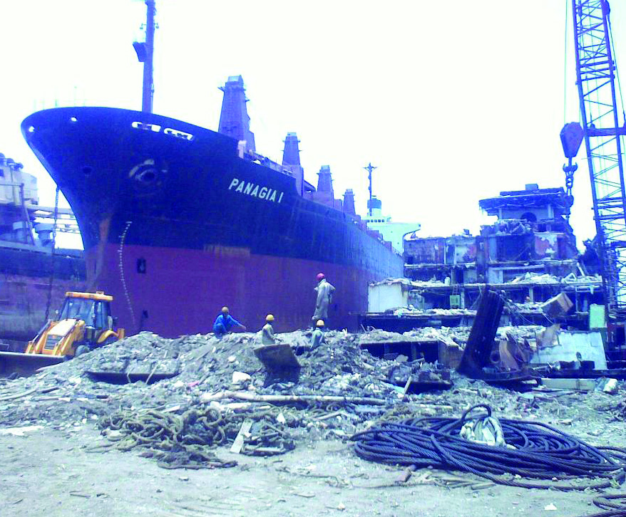

167
Along the Coasts
Standard IX
Ran of Kachchh is a salt marsh in the India –
Pak border region of Kachchh. 'Rann' in
Gujarati means desert. They become water-
logged marshes during rainy season, and turn
in to dry salt desert area later. The Rann of
Kachchh with white salty sand is a salt desert.
This marshland covering an area about 26,000
sq.km has two parts, Greater Rann and Little
Rann. Rann Utsav is their main festival which
lasts from November to February.
Rann of Kachchh
Ran of Kachchh - Salt marsh
Alang, the coast known as the
graveyard of ships, centres of cotton
textile industry such as Surat and
Vadodara,
fishing
harbours
of
Veraval, historically significant Dandi
beach, and numerous salt flats are all
signatures of human life in the coastal
plain of Gujarat.
Collect images of the above mentioned places with the help of
IT and prepare a digital album.
Konkan Coast
Coastal plain that stretches from Daman to Goa located at the
South of Gujarat coastal plain is the Konkan coast. Its length
is about 500 km. The coastal plain here is narrower in width
Fig 8.3
Ship dismantling centre at Alang coast
Page 72


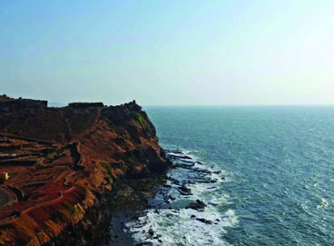

168
Part II
Social Science II
Identify the
major ports
located along
the Konkan
coast and
include in it 'My
Own Atlas'.
Pillar Rocks of St. Mary's Island
St. Mary's Island is an uninhabited small island
in the sea, off the coast of Malpe in Udupi
District of Karnataka. The island is full of
hexagonal-shaped pillar-like rock formations.
They are believed to have been formed by the
cooling of lava released by the volcanic eruption
that occurred about 88 million years ago. This
geologic rock pattern is called ‘columnar joints’.
It is also a major tourist destination.
Hexagonal Rocks
Konkan coastal plains receives high rainfall. Why?
Malabar Coast
The
Malabar
Coast
stretching
from
Mangalore
to
Kanyakumari is about 580 km long. This coast is wider than
as the Western Ghats runs parallel to the
coast. The northern part of Konkan coast
is sandy and southern part is rocky.
Coastal landforms like cliffs, islands and
beaches are found here. Goa, one of the
major tourist destinations in India, has
many beaches.
Humid climate with abundant rainfall
makes the Konkan coastal plain rich in
biodiversity.
Natural harbours such as
Nhavasheva (Navi Mumbai),
Mormugao, fishing harbour
of Malpe, shipyards, tourism
centres and industrial centres
make the Konkan coast a
vibrant area of economic
activities.
Fig 8.4
Cliff on Ratnagiri coast
Page 73


169
Along the Coasts
Standard IX
Fig 8.5
Vembanad Lake
Collect images of the major beaches in Kerala with the help of
IT and prepare a digital album.
the Konkan coast. Coastal landforms
such as cliffs, sea stacks, beaches,
estuaries and sand bars are also seen
in malabar coast. Another feature of
this coast is the kayal (backwaters).
Vembanad Lake is an important one
among them. Here backwaters and
lakes are inter-linked by canals to
facilitate water transport. It has been
made navigable from Kottapuram
to Kollam, which is one of the major
National Waterways of India (NW3).
In areas like Varkala, Ezhimala, and Bekal, the coast is found
elevated. Landforms like cliffs are also seen here.
Beaches such as Muzhuppilangad, Chavakkad and Kovalam
attract a large number of tourists. From the map, find the
locations of major beaches in the Malabar coast.
Generally coastal wetlands and backwaters are breeding
grounds for migratory birds. Bird sanctuaries such as
Kadalundi, Kumarakom and Pathiramanal are shelters for
migratory birds.
Rice fields of Nanjinad, Kuttanad and Kole Lands etc and
fishing harbours like Neendakara, Munambam, Ponnani and
Baypore are the centres of economic activities.
Location, extent, subdivisions and geographical characteristics
of Western Coastal Plains have been discussed. Now let's
examine the characteristics of the Eastern Coastal Plains.
Page 74

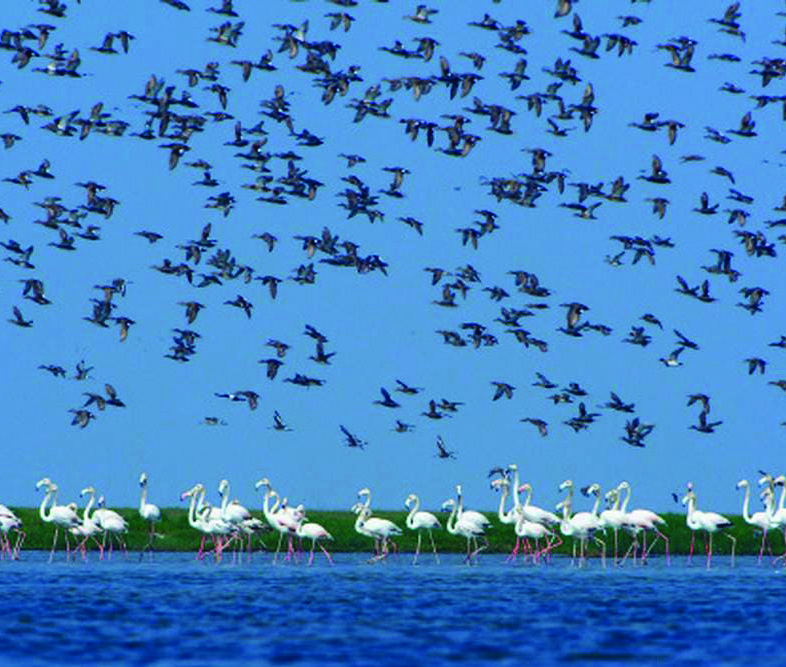


170
Part II
Social Science II
Observe Map 8.2. Identify and list the two divisions of the
Eastern coastal plains. Find their location and add to 'My own
Atlas'.
Northern Circars
The Coastal Plain that extends from Mahanadi Delta to
Krishna Delta is the Northern Circar Coast. It includes the
coastal areas of Odisha and Andhra Pradesh. It is known as
Utkal Plain in Odisha and Andhra Plain in Andhra Pradesh.
This plain mainly consists of deltaic
deposits by rivers such as Mahanadi,
Godavari and Krishna. Chilka Lake
located South of Mahanadi delta
is one of the largest lakes in India.
Kolleru Lake in Andhra Pradesh is
another important lake on the Circar
coast. Compared to the Western coast,
ports are less in the Eastern coast.
Vishakhapatanam and Masulipatanam
are the major ports.
Rice fields such as Srikakulam, East
Godavari and West Godavari, fishing
harbours of Vishakhapatanam and Masulipatanam stand tall
as the centres of economic activity of the coastal population.
Fig 8.6
Chilka Lake
Ports are less along the Eastern coast. What may be the reasons?
Eastern Coastal Plain
Didn’t you realise that the Eastern coastal plain is a relatively
wider coastal area lying between the Eastern Ghats and the
Bay
of
Bengal.
The
Eastern
coastal
plains
from
Mahanadi delta region to Kanyakumari having length
about 1800 km was formed as a result of the depositional
processes by peninsular rivers like Mahanadi, Godavari,
Krishna and Kaveri. It is an Emerged Coast. This coastal plain
consists of the deltas of Mahanadi, Godavari, Krishna and
Kaveri rivers. Don’t you remember our discussion about delta
and delta formation in the previous chapter?
Page 75


171
Along the Coasts
Standard IX
Coromandel Coast
It is the coastal plain extending from Krishna river delta to
Kanyakumari. Kaveri river delta is also part of this plain.
The fertile deltaic alluvium makes this region suitable for
rice cultivation. Pulikat Lake is one of the important lakes
of Coromandel coast. India's rocket
launching
station
Sriharikota,
is
located on the shores of Pulikat
Lake. Bird sancturies like Pulikat
Lake, Point Calimere and Mangroves
of Pichavaram are some centres of
biodiversity found along this coastal
plain. Nagappattinam and Cuddalore
are the main fishing harbours here.
Marina Beach on the Chennai Coast is
a famous tourist centre.
Fig 8.7
Marina Beach (Chennai)
With the help of an Atlas, find the major ports on the coastal
regions of India and include in 'My Own Atlas'.
Islands
Apart from the small islands near the coasts, two other
important island groups are the part of India.
Observe Map 8.2. Identify the island groups and complete the
table.
Island
Sea
Lakshadweep
...........................................................................
................................................
Bay of Bengal
Page 76
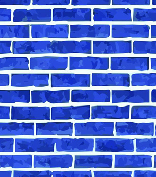
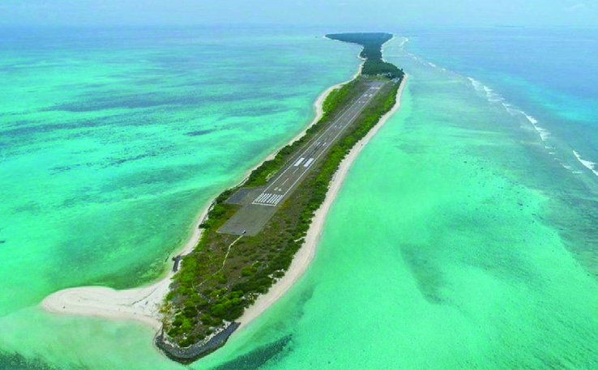
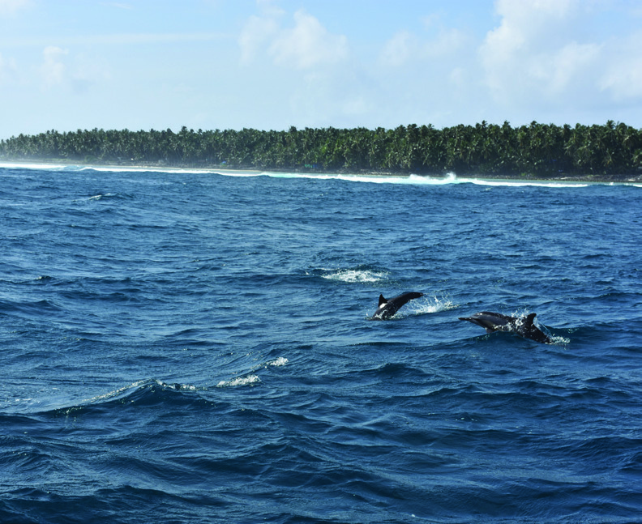

172
Part II
Social Science II
Fishing is the major occupation
and the main fish caught is tuna.
Fish is processed to make various
value added products. ‘Mass’
made of dried Tuna is famous.
Coconut is the main agricultural
crop.
Copra
(dried
coconut)
making and coir making are two
other
traditional
occupations
along with fishing. The fast
growing tourism is developing
as a modern occupational sector
taking advantages of the lagoons,
beaches and coral reefs. Adventure
tourism such as scuba diving is
also an upcoming job sector.
Lagoons are shallow water bodies
along the coasts that are separated
from the sea either by sandbars or
coral reefs.
Lagoons
Fig 8.9
Agatti island and the Lagoon around it
Didn’t
you
understand
the
islands located in Bay of Bengal
and Arabian Sea? Let's see their
characteristic features.
Lakshadweep
The Lakshadweep Islands formed
by coral reefs are located about
280 to 480 km away from the
Kerala coast in the Arabian Sea.
These islands are generally a few
meters high above sea level.
Out of the 36 islands in Laksha-
dweep only 10 are inhabited. Kavarati Island is the capital of
Lakshadweep, which is a Union Territory of India. Androth
is the largest island among them. Coral sand beaches and
lagoons are the main attraction of these islands.
Fig 8.8
An Island of Lakshadweep
Page 77

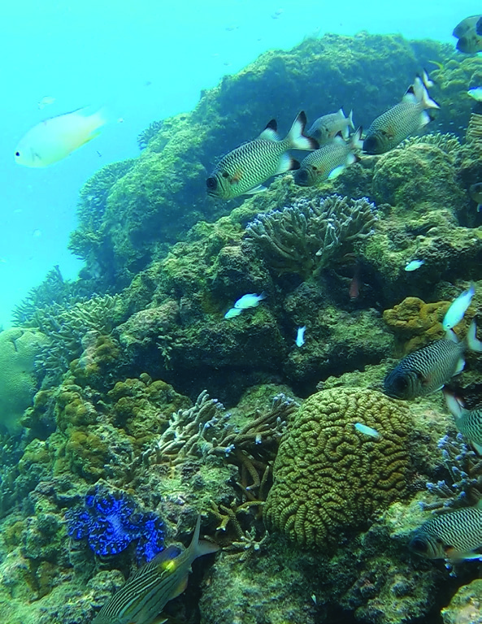


173
Along the Coasts
Standard IX
Coral reefs are formed by the accumulation
of dead remains of small marine organisms
called
coral
polyps.
Calcium
carbonate
secreted by coral polyps helps in the formation
of coral reefs. It takes hundreds of years to
form coral reefs. Coral islands are formed by
the growing of coral reefs on the submarine
mountain peaks above the sea level. Coral
which are alive found in different colours
such as orange, yellow and green. Coral reefs
are also the habitat for a variety of fishes and
marine organisms.
Coral reefs grow in shallow seas with clear
water along the coast in the tropical regions. In India, apart from
Lakshadweep, coral reefs are generally found in Gulf of Kachchh (Gujarat),
Gulf of Mannar (Tamilnadu) and the Andaman and Nicobar Islands.
Coral Islands
A coral reef of Lakshadweep
Andaman and Nicobar Islands
Haven’t you identified the location of Andaman Nicobar
Islands in Bay of Bengal?
These are volcanic islands. The sea portion separating
Andaman Islands from Nicobar Island
is called 10 Degree Channel. Barren
Island, the only active volcano in India,
is part of the Nicobar Islands. Out of
about 572 small and large islands, only
38 islands are inhabited. Most of the
islands are inhabited by indigenous
tribes. Port Blair is the capital of the
Union Territory of Andaman and
Nicobar Islands. Southern most point
of India, the Indira Point, is in the
Great Nicobar Island. Almost 4 meters
of the area had submerged in the sea
during the Tsunami of 2004.
Fig 8.10
Rose Island in North Andaman
Page 78

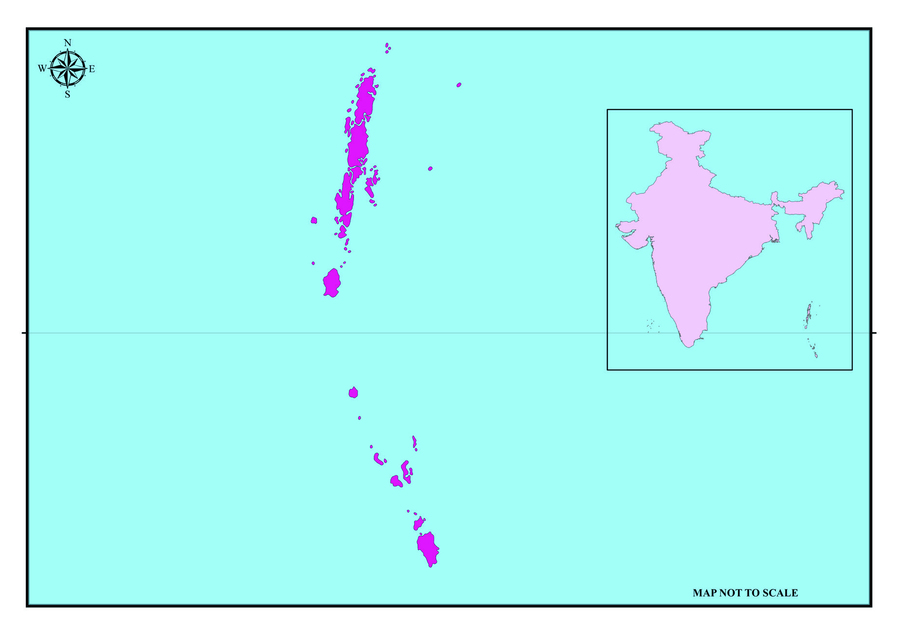

174
Part II
Social Science II
Fig 8.12
Sea Arch - Neil Island
(North Andaman)
Sandy beaches, rocky outcrops, sea
arches, cliffs, and tidal creeks are the
geomorphic features found here.
Tropical
Evergreen
Forests
are
abundant in Andaman and Nicobar
Islands due to high rainfall. The
Andaman and Nicobar Islands with its
coral reefs and beaches and limestone
caves, is a major tourist destination.
Coastal Land forms
We can see different landforms in
each geographical area. You might
know that these landforms are created
by different geomorphic agents. We
have discussed the land forms created by various geomorphic
agents such as river, glaciers and wind in the previous chapter.
North Andaman
North Andaman
Middle Andaman
Middle Andaman
India
India
Lower Andaman
Lower Andaman
Sentinel Island
Sentinel Island
10 Degree Channel
10 Degree Channel
10 Degree Channel
10 Degree Channel
Andaman Island
Andaman Island
Bay of Bengal
Bay of Bengal
Little Andaman
Little Andaman
Car Nicobar
Car Nicobar
Nicobar Island
Nicobar Island
Little Nicobar
Little Nicobar
Great Nicobar
Great Nicobar
Indira Point
Indira Point
Port Blair
Port Blair
Fig 8.11
Andaman Nicobar Islands
Andaman Nicobar Islands
Page 79
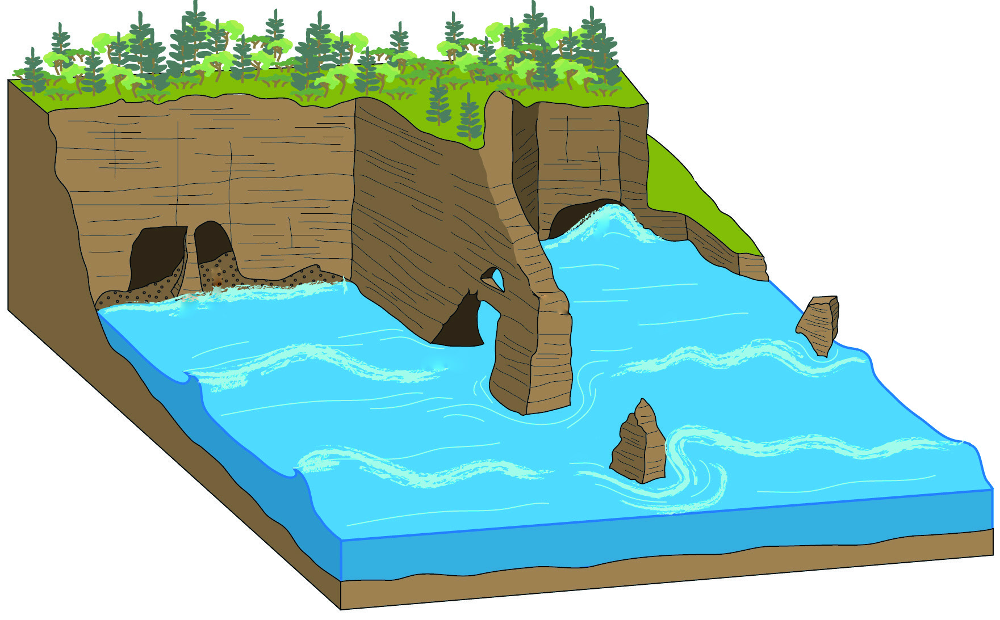

175
Along the Coasts
Standard IX
Sea waves are the important geomorphic agents in the coastal
regions.
Let's look into the landforms produced by erosional and
depositional process of sea waves. Look at Fig. 8.13. Don’t
you see the steep-sided land rising above the sea level? These
are cliffs. When sea waves hit continuously against the rocks
in coasts, coastal rocks are removed by erosion. As a
result, steep land surfaces are formed. Such landforms are
called cliffs. Similarly as a result of erosional process by
waves, small holes develop in the coastal rocks. These holes
get enlarged over a period of time and forms the sea caves.
Due to wave erosion, sea caves develop from both the sides
of coastal rock that protrudes into the sea. As the erosion
continues, both the caves subsequently merge to form an arch
shaped landforms. This is the sea arch.
When the roof of a sea arch collapses through continued
erosion, then the seaward part of the arch stands detached
from the shore and remains as a pillar. This is called the sea
stack.
Fig 8.13
Cliff
Cliff
Sea Cave
Sea Cave
Sea Arch
Sea Arch
Sea Stack
Sea Stack
Page 80

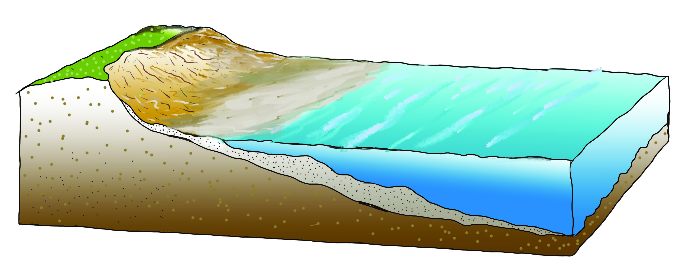

176
Part II
Social Science II
Understand the features of sea arches and sea stacks,
observing the figure.
Various depositional landforms also develop due to the waves'
action. Let's check what they are.
Beaches are the temporary deposits of sand and gravel
deposited between the limits of the high tides and low tides
by the action of waves.
High Tidal Limit
Sea Level
A
Fig 8.14 a
Low Tidal Limit
B
Sea Level
Beach
Fig 8.14 b
Observe Fig 8.14 a and 8.14 b. Identity the high tidal limit
and the low tidal limit. High tidal limit is indicated as A and
low tidal limit is indicated as B. Beaches are formed by the
depositional process of waves in the area between high and
low tidal limits.
Page 81
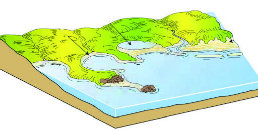


177
Along the Coasts
Standard IX
Fig 8.15
Lagoon
Lagoon
Sand Bars
Sand Bars
Spit
Spit
Beach
Beach
Collect images of landforms created by wave action and
prepare a digital album using IT.
Climate
Coastal regions experience unique climate unlike other
physiographic regions. Although they belong to the Tropical
Zone, the coastal regions of India have a moderate climate.
It does not experience too hot or too cold a condition here.
This is due to the maritime effect by the proximity to the sea.
Land and sea respond differently to the insolation. Land
gets heated and cools quickly, while ocean gets warm and
also cools slowly. This results in the formation of land and
sea breeze. These winds play a major role in moderating the
coastal weather.
Sand bars are the temporary embankments of sand deposited parallel to the
coast waves.
The sand bar that extends from land to sea is called spit.
Page 82
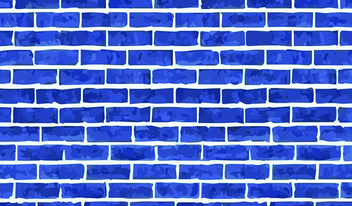


178
Part II
Social Science II
Sea Breeze and Land Breeze
In coastal regions, the land heats up quickly
during day time. As a result, the air above
the land rises up and develops low pressure,
whereas the sea is comparatively cooler than
the land and a high pressure is developed
over the sea. Hence air blows from the high
pressure area of sea to the low pressure
area of land. This is the sea breeze (Fig A).
In contrast to this, during night time, due to
the relatively rapid cooling high pressure
develops over the land. But because the sea
is relatively warmer than the land, it will
develop low pressure. Then the wind blows
from the high pressure area of land to the low
pressure area of the sea. This is called land
breeze (Fig B).
Fig A - Sea Breeze
Fig A - Sea Breeze
Fig B - Land Breeze
Fig B - Land Breeze
Warm air
Warm air
Warm
Warm
air
air
Cool sea
Cool sea
breeze
breeze
Cool land
Cool land
breeze
breeze
Fig 8.16
Monsoon winds is another factor influencing the coastal climate.
You know that it is the Southwest monsoon winds that give
rainfall all over India. Monsoon winds reach islands and coasts
first. Southwest monsoon winds coming through Arabian Sea
hits the Western Ghats and give high amount of rainfall in the
Western coastal plains.
Observe the Map (Fig 2.17) from the previous chapter and
identify the direction of monsoon winds over the Coastal Plains.
What is the reason for getting high amount of rainfall in the
Western coast during Southwest monsoon?
Eastern coast especially the Coromandel coast, receives rainfall
during the months of October and November. This is the
season of retreat of monsoon winds. During this season Kerala
also receives some rain. It is called 'Thulavarsham' in Kerala.
Observe Map 2.18 in the previous chapter and identity the
direction of Northeast monsoon winds.
Eastern coast also receives rainfall from cyclones developed in
the Bay of Bengal.
Coromandel coasts receive rainfall from the Northeast monsoon
winds. Find reasons.
Page 83


179
Along the Coasts
Standard IX
Soil
Depositional soil formed by the depositional activity of rivers
and waves are generally found in coastal regions. Sandy soil,
yellow and red laterite soil, black clayey soil and peaty soil are
found on the Western coasts.
Alluvial soil is commonly found in the Eastern coastal area.
Sandy laterite soil and black soils are also found in some places.
Examine the table given below. Identity the soil types in the
coastal areas and the islands. Prepare notes after gathering
additional information and present it in the class room.
Coast
Soil type
Gujarat Coast
Black soil, Coastal alluvial soil, Saline soil
Konkan Coast
Black soil, Laterite soil
Malabar Coast
Alluvial soil, Peat soil
Eastern Coast
Coastal Alluvial soil, Delta alluvial soil
Lakshadweep
Coral sandy soil
Andaman & Nicobar Island Marine sandy soil and Alluvial soil
Alluvial soil is found mostly in the Eastern coast. Why?
Find out the reason for the development of different types of
soils on each coast.
Natural Vegetation
Owing to its tropical location and proximity to sea, climate
is also almost similar in the coastal regions of India. Hence
vegetation types are also almost similar.
Page 84

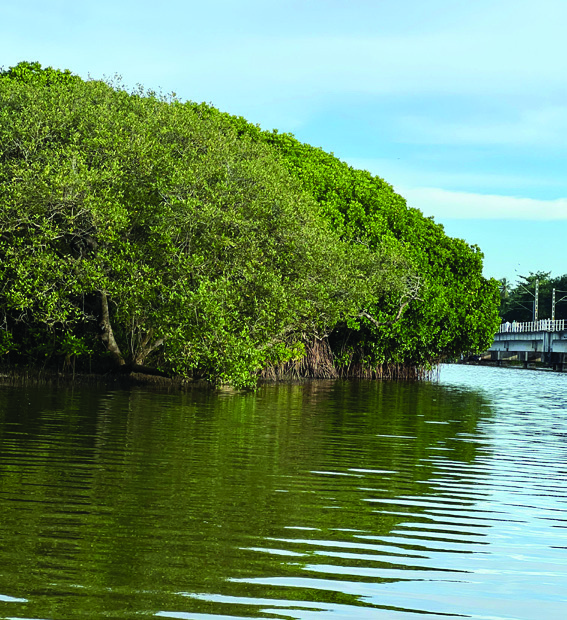

180
Part II
Social Science II
Salt
marsh
plants
Coastal Vegetation
Dry coastal vegetation
Wet coastal vegetation
Sandy
strand
vegetation
Mangroves
Sea
weed
Sea
grass
Coral
plants
Rocky
strand
vegetation
Fig 8.17
Most of the coastal plains have been extensively converted
into agricultural lands and crops such as coconut, banana,
rice and vegetables are cultivated here.
Fig 8.18
Mangrove
(Dharmadam, Kannur)
Mangroves are plants growing in salt water
marshes of tropical coasts. Mangroves are found
in about 380km along the coastal regions of India.
The Sundarbans on the Ganga deltaic region
of West Bengal is the largest mangrove forest
in India. Mangroves are breeding grounds for
various species of fish and other marine life and
the habitat for various organisms. Mangroves
protect coastal land and coastal people from
natural disasters like cyclone and Tsunami. They
are an important factor influencing the existence
of coastal ecosystem. International Mangrove
Day is observed on 26th July for the conservation
of mangroves.
Mangroves: the Lungs of the Coasts
Mineral Deposits
Indian coastal regions have large deposits of metallic and non
metallic minerals of industrial value. Iron ore, manganese,
bauxite are the main minerals found in the coastal plains. Rare
earth minerals such as monocyte, which is an ore mineral of
Examine the flow chart given below and identify the major vegetation types
in coastal regions.
Page 85

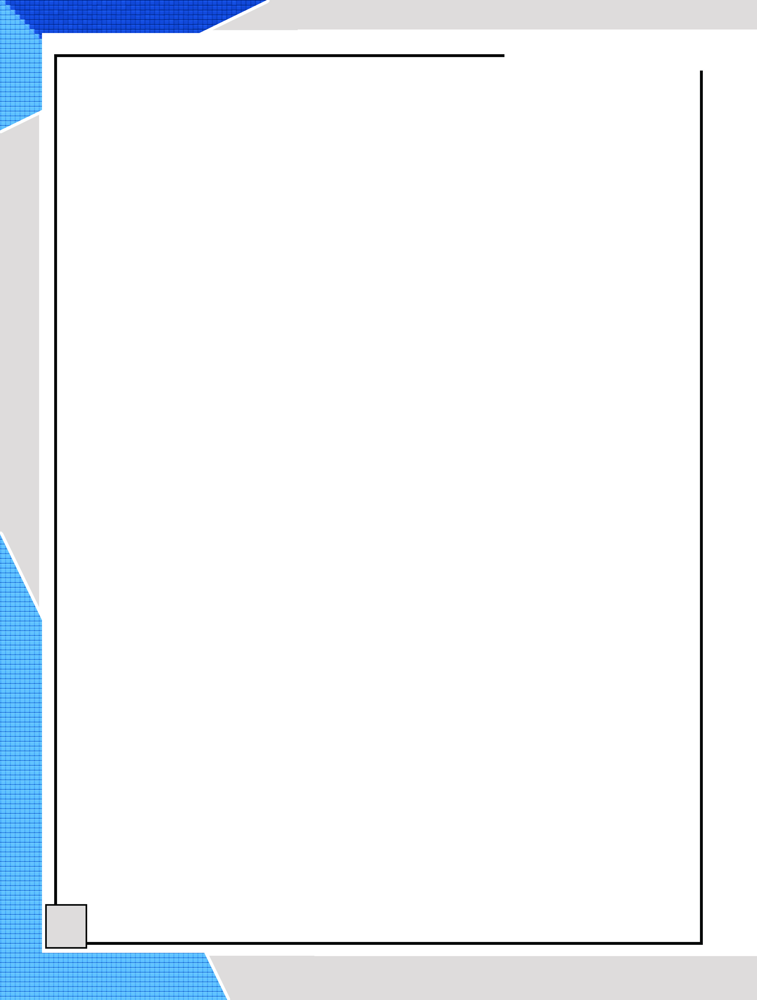
181
Along the Coasts
Standard IX
Economic Activities
Agriculture and fishing are the main economic activities
of people living in the coastal region. In addition to this,
there are various mineral-based industries, ship building,
fish processing and salt manufacturing industries in coastal
regions. Tourism is an important employment sector in the
coastal region, which has a great potential and is expanding
day by day.
Ports play an important role in the economic development of
a coastal region. Exports and imports of industrial products
and raw materials are carried out through the ports.
Population density is low in the Andaman and Nicobar Islands.
Find out the reason.
atomic fuel Uranium is also found in the coastal black sand.
Black sand depositions are found in Chavara in Kollam District
and some beaches of Odisha and Tamilnadu.
Population and Human Life
Indian coastal region is densely populated as most of factors
influencing population distribution are favourable. Factors
such as equitable climate, plains suitable for agriculture
and the development of transportation, employment
opportunities like agriculture, fishing, tourism, availability
of water, mineral deposits and industries make the coastal
plain densely populated. Apart from Delhi, three metro cities
of India (Mumbai, Chennai and Kolkota) had developed on
the coastal plains. Lakshadweep Islands have higher density
of population than the national average but in the Andaman
and Nicobar Islands the population density is low.
Page 86


182
Part II
Social Science II
Challenges Faced by Coastal Region
Coastal region has many potentials like topography suitable for
settlements, pleasant climate, availability of water, agriculture,
and industries. Even though it has several conditions to
its advantage, coastal area and its people are facing many
challenges. Natural disasters like Tsunami and cyclone,
sea level rise due to global climate change, coastal erosion and
sea turbulence make the life of the coastal people challenging.
People living in coastal regions are constantly striving to
adapt their social life to such adverse conditions of nature.
Issues related to climate change in the coastal area and the
possibility of natural disasters need to be monitored. For this
it is necessary to enforce timely warning and preparedness
with the participation of local community, taking advantage of
modern scientific technology. Appropriate resource planning
and conservation strategy is necessary for sustainable
utilisation of coastal resources and to get its benefits to the
local people. Sustainable development is possible only when
each of us joins hands together in such activities.
Extended Activities
1. Visit your nearest coastal area and find out how coastal
landscape characteristics influence human life. Prepare a
questionnaire for data collection.
2. Collect pictures of different coastal landforms across Indian
coastal area by using information technology and prepare a
digital album.
Page 87
MAP NOT TO SCALE
Page 88
CONSTITUTION OF INDIA
Part IV A
FUNDAMENTAL DUTIES OF CITIZENS
ARTICLE 51 A
Fundamental Duties- It shall be the duty of every citizen of India:
(a) to abide by the Constitution and respect its ideals and institutions,
the National Flag and the National Anthem;
(b) to cherish and follow the noble ideals which inspired our national struggle
for freedom;
(c) to uphold and protect the sovereignty, unity and integrity of India;
(d) to defend the country and render national service when called upon to do so;
(e) to promote harmony and the spirit of common brotherhood amongst all the
people of India transcending religious, linguistic and regional or sectional
diversities; to renounce practices derogatory to the dignity of women;
(f)
to value and preserve the rich heritage of our composite culture;
(g) to protect and improve the natural environment including forests, lakes, rivers,
wild life and to have compassion for living creatures;
(h) to develop the scientific temper, humanism and the spirit of inquiry and reform;
(i)
to safeguard public property and to abjure violence;
(j)
to strive towards excellence in all spheres of individual and collective activity
so that the nation constantly rises to higher levels of endeavour and
achievements;
(k) who is a parent or guardian to provide opportunities for education to his child or,
as the case may be, ward between age of six and fourteen years.